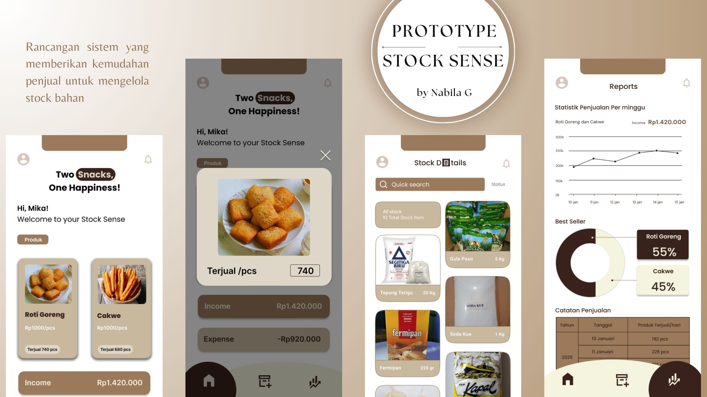

About
안녕하세요! Saya Nabila Gusniar Putri, mahasiswa Sistem Informasi di Universitas Internasional Semen Indonesia. Ini adalah langkah awal saya dalam mengeksplorasi dunia pemrograman web, dengan tugas pertama mata kuliah Pemrograman Web yaitu membuat halaman HTML sederhana. Saya sangat semangat dan antusias untuk belajar dan berkembang di bidang ini!

Hobbies
- Membaca cerita bergambar yang dipublikasikan secara digital
- Belajar bahasa baru lewat drama Korea & China
- Fotografi pemandangan dan potret
Projects

UX design perencanaan aplikasi sosial media "Postly: Kreativitas Mengalir, Interaksi Tak Terbatas!”.
Stock Sense adalah rancangan aplikasi yang memberikan kemudahan penjual untuk mengelola stok bahan.

Zero Waste Heroes adalah aplikasi untuk mengurangi limbah, terutama limbah makanan.
Articles
- Concept Information Systems
Artikel ini membahas tentang Sistem informasi yang berperan sebagai jembatan antara aspek teknis dan non-teknis.